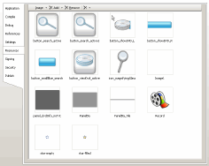
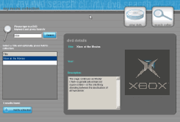

Microsoft Visual Basic 速成版初学者工具包
初学者工具包：电影收藏
目录：
介绍
下载更新的 Web Plus 版
入门
“电影收藏”如何工作
深入介绍“电影收藏”初学者工具包
介绍

“我的电影收藏”初学者工具包是一个示例应用程序，它用于帮助您跟踪您的电影收藏。使用此工具包，您可以组织收藏的电影、给它们评级，以及查找有关它们的信息。此外，您可以按自己的要求任意更改该应用程序，还可以查看其源代码。
下载更新的 Web Plus 版本
您希望将您的电影收藏连接到网上并下载有关这些电影的信息吗？Web Plus 版的“电影收藏”初学者工具包就具有此功能：它使用联机 Web 服务跟踪您的收藏并搜索电影。该 Web Plus 版还包含 Visual Basic 速成版随附的初学者工具包所没有的更新，所以即使您不想使用此 Web 功能，也应下载它。
从此处可以免费下载 Web Plus 版。
入门
启动并运行电影收藏应用程序的第一步是加载初学者工具包项目，方法是在“新建项目”对话框中选择“初学者工具包 �C 我的电影收藏”模板。
1) 启动“我的电影收藏”应用程序
要查看运行中的应用程序，必须运行它。
运行应用程序
- 按 F5 运行该应用程序。
该应用程序的窗体显示出来。在此窗体中，可以输入有关电影的信息并加以整理，以及在收藏中进行搜索。
2) 向收藏添加电影
让我们来将电影添加到收藏中。
向收藏添加电影
- 在窗体上单击“添加片名”。
在“添加片名”按钮上方的列表中打开一个新项，它称为记录。
- 在右侧的“DVD 详细信息”框中，添加您喜爱的电影的片名和其他信息，例如导演或电影评级。
无论何时添加、删除或修改数据，这些信息都会自动更新到作为项目组成部分的数据库文件中。
您可以随时从网格中挑选电影并查看其详细信息。
3) 更新关于收藏的信息
更新记录跟输入记录一样简单。
更新电影收藏中的记录
- 在列表中单击要更新的记录。
- 此记录中的数据显示在右侧的框中。
- 选择要更新的数据并进行更改。当光标离开该框后，新信息立刻保存下来。
4) 联机搜索电影信息
如果有 Web Plus 版的“我的电影收藏”初学者工具包，就可以利用 Amazon.com Web 服务提供的丰富的电影收藏。“我的电影收藏”初学者工具包应用程序是已连接的，您可以使用此连接下载有关您喜爱的电影的信息。不要忘记：若要使此功能正常工作，您需要连接到 Internet，并还需要使用 Web Plus 版本。可以从此处免费下载该版本。
获取电影的联机信息
- 如果现在处于脱机状态，请连接到 Internet。
- 在窗体上单击“联机搜索”按钮。
- 在第一个框中，键入与该电影相关的一个或多个关键字，然后单击“搜索”按钮。关键字可以取自片名、演员姓名或任何其他与该电影有关的词。 前十部匹配的电影将显示在结果列表中；如果所查找的电影不在这前十部中，您可以输入其他关键字以缩小搜索范围。
- 如果找到所查找的电影，则选中它并单击“添加到收藏”。
该电影即添加到您的收藏中。
5) 给电影评级
现在您可以成为一位电影评论家了。通过 Web 添加的电影没有评级或评论，但您可以添加自己的评级和评论。
给电影评级
- 用鼠标单击若干颗星来进行评级（1 至 5 级）。选中的星变为黄色。您的评级会自动保存。
添加电影评论
- 选择“评论”字段并输入您的评论。该评论将自动保存
6) 自定义应用程序
我们来看看自定义该应用程序的外观有多么简单。您可以自定义标签和窗体的文本，还可以使用自己的应用程序图像和图标。但是在此之前，您需要停止运行该应用程序。
停止运行应用程序
- 切换到 Visual Basic 速成版窗口。
- 在“调试”菜单上单击“停止调试”。
现在处于设计模式。在此模式下可以更改代码和设计。
自定义
“我的电影收藏”应用程序由若干窗体组成。MainForm.vb 是应用程序的起始点。还有两个自定义控件:
- ListDetails.vb �C 在此控件中可以查看有关收藏的详细信息。这些信息来自“我的电影收藏”数据库。
- SearchOnline.vb �C 此控件连接到 Amazon.com Web 服务，用于在线搜索。
通过在“属性”窗口中设置属性，可以自定义窗体或任何控件的文本或图像。或者，通过编辑与窗体关联的代码来更新属性。
以下示例介绍几种可用于自定义该应用程序的方法。
更改显示在“标题栏”中的文本
- 在“解决方案资源管理器”中，右击 MainForm.vb，然后选择“查看设计器”。
- 在“属性”窗口中，确保在下拉列表中选中 MainForm，然后找到并更改 Text 属性的值。例如，将该文本从“我的电影收藏”更改为“[您的姓名]电影收藏”。
按 Enter 后，窗体的 Text 属性即被更改。注意，窗体的“标题栏”将显示出新文本。
因为窗体自身所显示的文本仍为“我的电影收藏”，所以您可能还希望更改它以匹配标题栏。
更改显示在窗体上的文本
- 在“解决方案资源管理器”中，右击 MainForm.vb，然后选择“查看设计器”。
- 选择含有文本“我的电影收藏”的 Label 控件。
- 在“属性”窗口中，找到并更改 Text 属性的值。例如，将该文本从“我的电影收藏”更改为“[您的姓名]电影收藏”。
按 Enter 后，标签的 Text 属性即被更改。
您可以更改出现在窗体上的任何自定义控件的属性。
应用程序的图像在“项目设计器”的“资源”选项卡中进行管理。
添加背景图像
- 在“解决方案资源管理器”中双击“我的项目”。“项目设计器”打开。此设计器使修改或添加内容（如资源文件）变得很容易。
- 在左侧单击“资源”选项卡。
- 在“类别”列表中选择“图像”。
- 将您喜爱的图像添加到设计器中。单击“添加”按钮，然后单击“现有文件”。定位到要添加的图像。或者将图像文件从 Windows 资源管理器（例如，从 My Pictures）拖放到设计器中。
-
在“解决方案资源管理器”中，右击 ListDetails.vb，然后选择“查看设计器”。
ListDetails 窗体将出现在“窗体”设计器中。
- 选择 DVDDetailsPanel 控件（窗体右侧的深灰色框）。
在“属性”窗口中，找到 BackgroundImage 属性并单击该属性右侧的省略号按钮。
“选择资源”对话框将会打开。
-
选择刚才添加的图像，然后单击“确定”。
新背景图像将出现在设计器中。您可以将图像更改为 Resources 文件夹中的任一图像，包括您添加的图像。

您遇到过电影片名太长，标签放不下的情况吗？以下方法可以解决这个问题。
更改 ListDetails 的显示行为
- 在“解决方案资源管理器”中，右击 ListDetails.vb，然后选择“查看设计器”。
- 单击 Label2 控件(“[片名]”)，在“属性”窗口中将 AutoSize 属性设置为 False；将 AutoEllipsis 属性设置为 True。
测试应用程序
- 按 F5 重新生成该应用程序。现在可以看到所做的更改了。
将鼠标移到收藏中的电影片名上，可以显示其工具提示和省略号。
想添加一个新字段来记录电影中的演员信息吗？方法如下。
向 ListDetails 添加字段
- 在“解决方案资源管理器”中，右击 ListDetails.vb，然后选择“查看设计器”。
- 将 TextBox 控件从“工具箱”窗口拖到“说明”字段下的窗体上。根据需要调整控件的大小并重新排列。
- 选择该 TextBox 控件，然后在“属性”窗口中选择 (DataBindings) 属性并展开它。
- 选择 (Advanced) 属性，单击省略号按钮以打开“格式设置和高级绑定”对话框。
- 从“绑定”下拉列表中选择“DVDsBindingSource - 演员”，然后单击“确定”。
- 将 Label 控件从“工具箱”拖到窗体上，并将它放在新 TextBox 控件旁边。
- 在“属性”窗口中，将 Text 属性更改为“演员”。
再次运行该应用程序时就可以看到“演员”字段，并可以输入电影演员的姓名。
您有多种格式的电影吗，如 DVD 和 VHS？您可以向数据库添加一个字段以记录媒体类型。
向数据库添加字段
- 在“解决方案资源管理器”中，右击 DVDCollectionDatabase.mdf，然后选择“打开”。“数据库资源管理器”窗口将会打开。
- 在“数据库资源管理器”中，展开“表”节点，找到“DVD”，然后右击并选择“打开表定义”。
- 在“表”设计器中，滚动到列表底部，在“列名”列键入“媒体”。
- 在“数据类型”列中，从下拉列表中选择 nvarchar(MAX)。
- 在“文件”菜单上，选择“保存 DVD”，以保存更改。
现在可以向 ListDetails 视图添加“媒体”字段了，其方法与上例中添加“演员”字段的方法相同。
“我的电影收藏”如何工作
这里已经对“我的电影收藏”初学者工具包做了简要介绍。您可以多使用几次该应用程序，获得自定义其外观的更多实践经验。您可以尝试重排控件的布局，也可以彻底改变应用程序的外观。如果您熟悉 Visual Basic 代码，就可以通过查看源代码来深入了解应用程序的功能。最后，您还可以向应用程序添加组织图书和音乐的功能，或在此应用程序的基础上编写您自己的应用程序。
“我的电影收藏”文件和文件夹
“我的电影收藏”初学者工具包由以下文件和文件夹组成。
| MainForm.vb | 主窗体；用作控件的容器。 |
| ListDetails.vb | 自定义用户控件；用作电影收藏的查看器和编辑器。 |
| SearchOnline.vb | 自定义用户控件；用作联机 Web 服务的搜索工具。 |
| DVDCollectionDatabase.mdf | 用于电影收藏的数据库。注意：在向项目中添加数据库时，了解数据库的位置很重要。有关更多信息，请查找帮助主题“如何：在项目中管理本地数据文件”。 |
| DVDCollectionDataSet.xsd | 数据集和数据层对象；帮助执行数据库操作，如加载、保存和验证数据。 |
| Resources 文件夹 | 包含图像（如位图）的文件夹。 |
| Documentation 文件夹 | 包含初学者工具包的文档和帮助的文件夹。右击 Getting Started Tutorial.htm，然后单击“在浏览器中查看”，可以查看该文档。 |
| Controls 文件夹 | 由收藏使用的自定义控件。 |
| Web References 文件夹 | （仅限于 Web Plus 版），包含 Web 服务连接的文件夹。 |
| Project 文件夹 | 包含 Visual Basic 项目和应用程序设置的文件夹。双击可打开“项目设计器”。 |
深入介绍“我的电影收藏”初学者工具包
本节介绍“我的电影收藏”工具包的工作方式，并推荐进行自定义的切入点。
联机搜索

（仅限于 Web Plus 版）应用程序请求对 this 数据进行联机搜索，并且用描述结果数据的 XML 数据进行响应。这类似于访问网页并执行搜索；该应用程序以编程方式向 Web 服务发出请求，该服务用 XML 数据进行响应。注意，SearchOnline.vb 文件的 PerformSearch 方法中只有几行代码用于添写 DVD 对象列表并将它们绑定到屏幕上。
'负责包含 dvd 搜索结果的对象
Dim searchResults As New BindingList(Of DVD)
'负责处理来自 Amazon.com Web 服务的请求和响应的简单包装对象
Dim amazonService As New SimpleAmazonWS
'在搜索过程中显示沙漏，以通知用户搜索正在进行
Me.Cursor = Cursors.WaitCursor
Try
'请求 Web 服务根据用户的搜索条件返回搜索结果
searchResults = amazonService.SearchDVDs(Me.SearchTextBox.Text)
'将搜索结果数据绑定到窗体用户界面
Me.DVDBindingSource.DataSource = searchResults
Catch ex As Exception
MsgBox(String.Format("连接到 Web 服务时出现问题。请确认您已连接到 Internet。其他详细信息：{0}", ex.Message))
My.Application.Log.WriteException(ex)
Finally
'工作完成后，将光标重新设置为默认值
Me.Cursor = Cursors.Default
End Try
'告知用户查找到的结果数目。使用 String.Format 功能按照便于本地化的方式连接字符串
Me.Label2.Text = String.Format("找到 {0} 个结果。", searchResults.Count.ToString)
End Sub
此方法创建一个 DVD 对象的列表，然后调用经过简化的 Amazon.com Web 服务来根据搜索条件（由用户界面上的 SearchTextBox 控件指定）获取 DVD 搜索结果。然后将 SearchOnline 控件数据绑定到 Web 服务返回的 DVD 对象结果列表。这可以通过设置控件的 DataConnector.Datasource = [DVD 对象的列表] 来完成。
数据绑定
Visual Basic 将 this 数据视为 DVD 对象的列表，并且可以将控件与它绑定（即控件的数据基于它）。Visual Basic 速成版允许将用户界面元素绑定到几种数据:
- 数据库
- 对象
- Web 服务
创建绑定到数据的元素非常简单，只需进行拖放即可，或者在特定控件上使用智能标记。然后可以编写其他代码，动态地将元素绑定到数据，只要它是同类型的数据即可。
例如，在 DVD 片名的联机搜索中，单击结果列表的第一项，然后单击第二项。注意，网格中填入了来自 Web 服务的数据。
单击某一项会在右侧的框中显示详细信息。应用程序还从图像 URL 检索图像，如果有图像，就将它们显示在“图片框”中。这是异步完成的。
现在，选择您喜爱的电影并单击“添加到收藏”。即执行下列代码。
'尝试将数据添加到收藏中
Try
'检查边界情况：DVD 列表是否为空或者当前是否未进行选择
If (Me.DVDBindingSource.Count > 0) AndAlso (Me.DVDBindingSource.Current IsNot Nothing) Then
'存储当前 DVD 选定内容的对象
Dim currentDVD As DVD = CType(Me.DVDBindingSource.Current, DVD)
'尝试将图像缓存为 dvd 对象
If Me.PictureBox1.Image IsNot Nothing Then
'首先尝试从图片框加载
currentDVD.ImageCache = Me.PictureBox1.Image
ElseIf currentDVD.ImageUrl <> "" Then
'否则尝试从源 URL 加载
Me.PictureBox1.Load(currentDVD.ImageUrl)
currentDVD.ImageCache = Me.PictureBox1.Image
End If
'将自定义 DVD 对象转换为该应用程序所使用的数据表/数据行格式，并
'将数据行添加到数据表
My.Forms.MainForm.ListDetailsPart.DVDCollectionDataSet.DVDs.AddDVDsRow(currentDVD)
'更新显示，以显示选中了新行的 ListDetailsPart
My.Forms.MainForm.ListDetailsPart.DVDsBindingSource.MoveLast()
My.Forms.MainForm.ShowListDetailsPart()
Else
MsgBox("未选择 DVD。请先选择 DVD，再添加到收藏。")
End If
Catch ex As Exception
MsgBox("向收藏中添加此 DVD 时出现问题。")
My.Application.Log.WriteException(ex)
End Try
End Sub
此步骤将 DVD 对象列表转换为 DVD 收藏使用的格式，即 DVDCollectionDataSet，然后添加一个新的 DVDCollectionRow。此步骤类似于手工在收藏中输入一个 DVD 片名。通过查看 DVDCollectionDataSet.vb 文件可以看到执行该转换的代码。
应用程序动态地开始再次查看该收藏。此时可以修改可编辑字段中的数据。也可以加入个性化数据，如评论和评级。
用户控件
“我的评级”字段作为用户控件来实现，该用户控件是用 Visual Basic 创建的，名为 RatingPicker.vb。如果以设计模式查看窗体，您将不会看到 RatingPicker 控件，因为它是在窗体加载 InitRatingPickerControl() 方法时创建的。
您可能已经注意到，当鼠标移到 RatingPicker 控件上时，那些星会在鼠标移过它们时亮起来。此功能在 Star_MouseHover 方法中由下列代码处理：
If Not Me.m_Initializing Then
Select Case (hoverOverStar.Name)
Case Me.Star1.Name
Me.PreviewNewRating(RatingPickerValue.Poor)
Case Me.Star2.Name
Me.PreviewNewRating(RatingPickerValue.BelowAverage)
Case Me.Star3.Name
Me.PreviewNewRating(RatingPickerValue.Average)
Case Me.Star4.Name
Me.PreviewNewRating(RatingPickerValue.AboveAverage)
Case Me.Star5.Name
Me.PreviewNewRating(RatingPickerValue.Excellent)
End Select
End If
那些星（Star1、Star2 等）是用户控件中包含的图片框。根据鼠标在哪颗星上，使用 RatingPickerValue 调用 PreviewNewRating 方法。下列代码根据评级设置每颗星的图像:
Dim setimage As Bitmap = My.Resources.star_filled
Select Case (newRating)
Case RatingPickerValue.NotSet
Me.Star1.Image = notsetimage
Me.Star2.Image = notsetimage
Me.Star3.Image = notsetimage
Me.Star4.Image = notsetimage
Me.Star5.Image = notsetimage
Case RatingPickerValue.Poor
Me.Star1.Image = setimage
Me.Star2.Image = notsetimage
Me.Star3.Image = notsetimage
Me.Star4.Image = notsetimage
Me.Star5.Image = notsetimage
Case RatingPickerValue.BelowAverage
Me.Star1.Image = setimage
Me.Star2.Image = setimage
Me.Star3.Image = notsetimage
Me.Star4.Image = notsetimage
Me.Star5.Image = notsetimage
Case RatingPickerValue.Average
Me.Star1.Image = setimage
Me.Star2.Image = setimage
Me.Star3.Image = setimage
Me.Star4.Image = notsetimage
Me.Star5.Image = notsetimage
Case RatingPickerValue.AboveAverage
Me.Star1.Image = setimage
Me.Star2.Image = setimage
Me.Star3.Image = setimage
Me.Star4.Image = setimage
Me.Star5.Image = notsetimage
Case RatingPickerValue.Excellent
Me.Star1.Image = setimage
Me.Star2.Image = setimage
Me.Star3.Image = setimage
Me.Star4.Image = setimage
Me.Star5.Image = setimage
Case Else
Me.Star1.Image = notsetimage
Me.Star2.Image = notsetimage
Me.Star3.Image = notsetimage
Me.Star4.Image = notsetimage
Me.Star5.Image = notsetimage
End Select
您可以轻松地自定义该控件，使它使用不同的图像，或者用十颗星而不是五颗星来显示评级。
更多信息
© 2000 Microsoft Corporation 和/或其供应商。保留所有权利。使用条款。